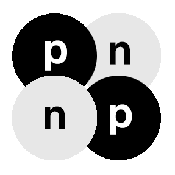
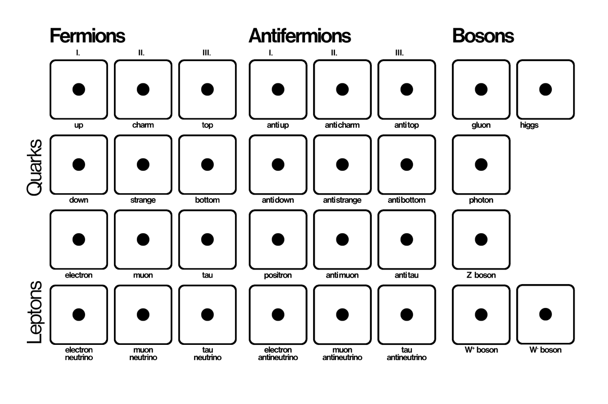

escrito por: uri o'callaghan /inspiredby magazine of arts and culture editor /08 min read

El Modelo Estándar
de la física de partículas
Fermiones
Bosones
|
Quark |
Quark |
Quark |
|
Boson |
|
Quark |
Quark |
Quark |
|
|
|
|
|
|
Boson |
|
|
Neutrino |
Neutrino |
Neutrino |
Boson |
Tú eres eso.
El Modelo Estándar de la física de partículas es -quizá- la teoría más brillante de la ciencia moderna y busca explicar todo aquello de lo que estamos hechos. Se trata del puzzle que une décadas de investigaciones científicas, experimentos y descubrimientos para comprender las partículas que forman absolutamente todo en el universo. En tan solo unas pocas partículas, consigue describir casi por completo cualquier interacción o suceso que ocurre en el universo, desde la formación de elementos hasta la vida. Todos los seres vivos de tu alrededor son una mezcla muy compleja de miles de millones de estas pocas partículas.
El Modelo Estándar describe tres de las cuatro fuerzas fundamentales del universo: el electromagnetismo, la fuerza nuclear fuerte y la fuerza nuclear débil. No consigue explicar la gravedad, paradójicamente la fuerza que nos es más intuitiva en el día a día. La comunidad científica busca, desde hace años, una gran teoría que una el Modelo Estándar (que consigue explicar tres fuerzas) y la Relatividad General (que explica la gravedad) para conseguir una teoría unificada de la física, ya que hasta ahora, estas dos teorías parecen incompatibles.1
En el Modelo Estándar, las partículas se dividen en fermiones y bosones. Los fermiones son los componentes de la materia (como el electrón), mientras que los bosones son las partículas portadoras de fuerzas (como el fotón, portador de la fuerza electromagnética). Cada fuerza tiene su correspondiente bosón. La hipotética partícula -aún no encontrada- portadora de la gravedad, sería el gravitón.

Átomo de Helio
Compuesto por un núcleo de dos protones y dos neutrones. Cada uno de ellos se compone de tres subpartículas, llamadas quarks.
Todos los átomos de tu cuerpo están formados por núcleos de protones y neutrones rodeados de orbitales de electrones. Hasta donde sabemos, el electrón es una partícula fundamental, es decir, no está compuesto de otras partículas. En el caso de los protones y neutrones, estos están compuestos de partículas más pequeñas, llamadas quarks. Como habrás podido comprobar en el esquema de las partículas fundamentales, no encontramos al protón y al neutrón, porque estos están compuestos de los quarks 'up' y 'down'. Cada protón tiene dos quarks 'up' y un quark 'down'. De forma inversa, un neutrón tiene dos quarks 'down' y un quark 'up'.
El problema de la antimateria
Para cada una de las partículas del Modelo Estándar, existe su antipartícula, es decir, una partícula igual pero con carga opuesta y algunos valores cuánticos opuestos. Así, el electrón (con carga negativa), tiene su antipartícula: el positrón (con carga positiva). El quark 'up', su anti-quark up. El quark 'down', su anti-quark down. Y así sucesivamente. Las antipartículas pueden también juntarse en átomos, moléculas y estructuras. Así, las leyes de la naturaleza no impiden, en principio, que se pudieran formar anti-galaxias, con anti-estrellas, anti-planetas, con anti-vida, con anti-humanos haciéndose preguntas sobre el Universo, como tú y como yo.2
De este modo, el esquema de partículas completo del Modelo Estándar es realmente el siguiente. Nótese que por cada fermión, existe su antifermión.

El Modelo Estándar es una teoría tan completa que nos ha permitido corroborar predicciones a exactitudes increíblemente pequeñas. Pese a ello, sabemos que está incompleta. Lo está por lógica, principalmente por qué la teoría predice que no deberíamos existir y que el universo debería estar vacío. Y sin embargo, ahí estamos.
"Si la materia y la antimateria se crean y destruyen juntas, parece que el universo no debería contener nada más que energía sobrante."
-CERN. The matter-antimatter asymmetry problem03
Cuando una partícula de materia choca con su antipartícula, estas se aniquilan, convirtiendo toda su masa en energía (siguiendo la famosa ecuación E=mc2). Por esta razón, nunca podríamos saludar a un hipotético ser hecho de antimateria: nos desintegraríamos al instante, liberando energía. El problema es que, siguiendo la teoría del Big Bang, en los primeros instantes del Universo, materia y antimateria deberían haberse creado en cantidades iguales, de modo que se habrían aniquilado por completo. Sin embargo aquí estamos: hechos de materia, en un planeta de materia, en una galaxia de materia, en un grupo local de galaxias hechas de materia. Por alguna extraña razón que todavía no hemos conseguido entender, el Universo inicial debió tener un pequeño porcentaje superior de materia que de antimateria, de modo que tras una aniquilación casi total, quedó un pequeño excedente de materia de una partícula por cada billón.3 Nosotros somos eso.
Las cuatro fuerzas fundamentales
Hasta dónde sabemos, el Universo está regido solamente por cuatro fuerzas (o interacciones) fundamentales. Dos de ellas nos son familiares y fáciles de comprender, mientras que las otras dos se manifiestan a nivel atómico, de modo que suelen ser poco comprendidas. Según el Modelo Estándar de la física de partículas, todas ellas se manifiestan mediante el intercambio de sus propias partículas, llamadas bosones. Por ejemplo, el bosón de la fuerza electromagnética es el fotón.
La gravedad es la fuerza que nos mantiene con los pies en el suelo, la Tierra orbitando al Sol y a las estrellas orbitando galaxias. Como se ha dicho anteriormente, suele ser la fuerza más intuitiva de nuestro día a día, pero es la que menos comprendemos. A día de hoy, no se ha conseguido explicar desde la teoría cuántica y por ello, no forma parte del Modelo Estándar.2 Sin embargo, es explicada por la Relatividad General de Albert Einstein, pero hasta ahora no se ha conseguido una teoría unificada que una la Relatividad con la teoría cuántica. Tiene un alcance infinito y siempre es de atracción. De este modo, incluso las galaxias notan atracción gravitatoria entre ellas.
El electromagnetismo es la otra fuerza que nos es intuitiva. Su partícula de interacción (o bosón) es el fotón. Absolutamente todas nuestras comunicaciones inalámbricas, como el WIFI, el GPS y la radio, se transmiten mediante fotones. La luz del Sol también nos llega en forma de fotones, que iluminan y calientan nuestro planeta. A su vez, la fotosíntesis se basa -en su totalidad- en la captura de fotones solares para utilizar su energía. Toda vida compleja en la Tierra depende, en última instancia, de los fotones solares capturados por la fotosíntesis. La luz visible también son ondas electromagnéticas. Al igual que la gravedad, el alcance del electromagnetismo también es infinito, pero su fuerza es superior. También es el responsable de la carga eléctrica, que puede ser positiva o negativa. La carga eléctrica de los átomos es la que nos impide atravesar el suelo o la pared.
La fuerza nuclear débil es la responsable del decaimiento de núcleos atómicos mediante radioactividad beta. Su intensidad es superior a la gravedad, pero su alcance es muy pequeño, de modo que solo se manifiesta a nivel atómico. Es la única que se manifiesta mediante dos bosones, el bosón Z y el bosón W.4 Sin ella, los elementos radioactivos del núcleo terrestre dejarían de serlo, de modo que el núcleo terrestre de hierro fundido se enfriaría, haciendo desaparecer el campo magnético terrestre, indispensable para la protección de los seres vivos. Sin calor interno de la Tierra, los primeros organismos terrestres no habrían podido utilizar esta fuente de energía, de modo que probablemente, no hubiera habido vida. Nuestra fuente de energía principal, el Sol, también depende de la radioactividad para fusionar átomos de hidrógeno y generar el calor que emite durante el proceso, de modo que el Sol tampoco podría existir sin la fuerza nuclear débil. Y sin Sol, tampoco hubiera habido vida.
La fuerza nuclear fuerte, como su nombre indica, es la más fuerte entre todas ellas. Sin embargo, su alcance es muy pequeño, y se limita a los núcleos atómicos. Su bosón es el gluón (véase la tabla del Modelo Estándar). Es la que mantiene unidos a los quarks en protones y neutrones, y a estos en el núcleo atómico. Sin ella, la fuerza electromagnética de repulsión entre dos protones (que tienen carga positiva, y por lo tanto se repelen) haría imposible que estuvieran juntos en un núcleo atómico, por lo que no habría átomos, vida, planetas, estrellas ni galaxias en todo el Universo.
El 5% del Universo
Otro gran problema del Modelo Estándar es que no describe el comportamiento de toda la materia del Universo. De hecho, describe una parte muy pequeña, la materia bariónica, es decir, la materia de la que estamos hechos (el único tipo de materia que hasta ahora conocemos). Para que nuestras teorías sobre la gravedad y el comportamiento del Universo cuadren, el Universo debería ser mucho más masivo. Tal como explica el CERN, las mediciones actuales muestran que las galaxias parecen estar rotando a una velocidad muy superior de la que deberían (respecto a la masa que parecen tener). Por lo tanto, creemos que existe algún tipo de materia desconocida que está incrementando la masa total de las galaxias, pero que nos es invisible. A este tipo de hipotética (o hipotéticas) partícula le llamamos materia oscura (que no es lo mismo que antimateria, pues esta sí que está incluida en el Modelo Estándar).
La materia oscura sería una extraña serie de partículas que no interaccionan con la fuerza electromagnética, de modo que no las podríamos ver (recordemos que la luz visible son fotones, las partículas portadoras del electromagnetismo). Por lo tanto, al analizar galaxias, no podemos ver materia oscura, pero sí que vemos la influencia gravitatoria que produce en ellas. Supuestamente, en nuestra galaxia también habría materia oscura cruzando constantemente todo rincón de la galaxia, incluido nuestro hogar. La velocidad de rotación de las galaxias solo cuadra con nuestro modelo de la gravedad si damos por hecho que el 27% del Universo está compuesto por materia oscura. 5
El Universo en %:
27
Energía
oscura
27
Materia
oscura
27
Materia
bariónica
El actual ritmo de expansión del Universo tampoco parece ser el que correspondería. Nuestras observaciones muestran que el Universo se expande a una velocidad anormalmente rápida, y no debería ser así. Hasta hace pocos años, se nos había pasado por alto el hecho de que, entendiendo que la gravedad solo es una fuerza de atracción, los diferentes cuerpos celestes deberían estar acercándose y no alejándose (o al menos, desacelerando la expansión). Las mediciones demostraron que esto no es así: no solo no se estaban acercando, sino que la velocidad de expansión del Universo cada vez era superior. A día de hoy, esta gran crisis de la cosmología sigue siendo un gran misterio. El consenso actual más aceptado es que existe otro tipo de energía, llamada energía oscura, que sería la responsable de esa expansión acelerada. El 68% del total de nuestro universo sería energía oscura. 6
Hemos visto que a pesar del éxito del Modelo Estándar, aún quedan fronteras por superar en el mundo de la física para comprender nuestro Universo. Entender de qué estamos formados es crucial para responder a las preguntas existenciales que nos solemos hacer sobre quiénes (o qué) somos. Quizás seamos únicamente un conjunto de partículas increíblemente bien ordenadas haciéndose preguntas. Lo que ha quedado claro es que habrá futura física. Mientras tanto, en Inspired By Magazine seguiremos hablando sobre las partículas de las que estamos hechos.

En Inspired By Magazine creemos en la libre circulación de ideas y por eso, nuestros artículos están disponibles para su republicación libre, con la única condición de citar a sus autores y notificarles la republicación. Para más información, oriolocallaghan@gmail.com
Compartir artículo en:
Fuentes:
01. Cern. Standard Model.
02. Hawking. S. & Mlodinow. L. (2005). Brevísima historia del tiempo. Crítica. ISBN 9788498927948
03. CERN. The matter-antimatter asymmetry problem. CERN. 04. Webb. R. Weak nuclear force. New Scientist. 05. CERN. Dark matter. CERN. 06. NASA. Dark Energy, Dark Matter. NASA.